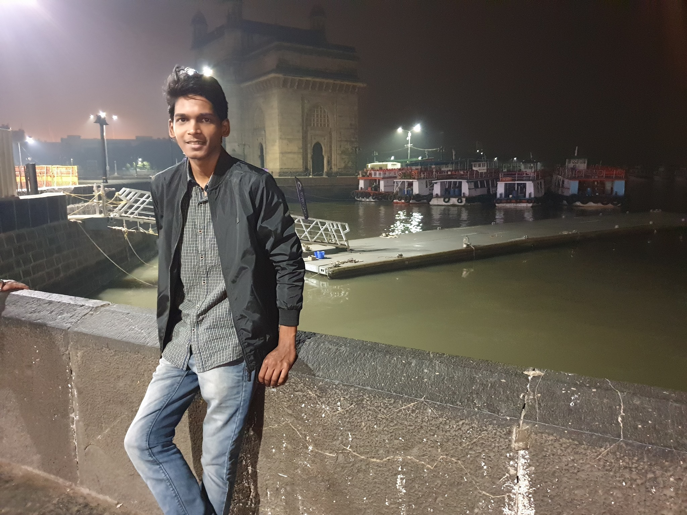

Sanket Lunawat
Market Research Professional
Healthcare and Crossdomain
Contact: +91-8668532403
Email: sankett.lunawat@gmail.com
Research Stack
Market Estimation
Trade Analysis, Financial Analysis
Content Writing (RD, PR), Research Proposals
MS Excel,MS Word, Power BI, Python
Work History
üöß Sr.Research Associate | Upmarket Research
Septemper 2021 - Present
Worked on various client reports and syndicate reports to help businesses take insightful decesions
- Conduct market research to determine customer needs and impressions of goods and services, design survey instruments and coordinate the collection of data, compile information, analyze results and prepare reports, setting forth consumer attitudes and trends and appropriate marketing recommendations and conclusions.
- Gathering statistical data on competitors and examining prices, sales, and methods of marketing and distribution, then analyze data on past sales to predict future sales.
- Responsibilities include preparation of the questionnaire, analyze focus market, undertook telephonic research, gather and analyze data, test assumptions, prepare reports, coordinate and organize a focused team in the market sector, merge the data gathered and analyze the result output.
- Prepare dashboard, cost models, and presentations for various products used extensively in Healthcare Industry.
- Preparing syndicate and consulting market research report on different manufacturing sector for domestic and international clients.
- Employing price modeling and forecasting algorithms.
- Handling of client calls (mainly from Europe region) and understanding their precise or niche requirements
- Primary research with key opinion leaders in the industry and contribution in building a panel of experts in the industry.
- Secondary research to build the analytical sections within each report and to identify datapoints/ market trends etc.
Educational History
üöß Msc. Bioinformatics | Dept. of Bioinformatics, SPPU
2018-2020
CGPA: 7.23/10
Bioinformatics implements Information Technology to study living things at the molecular level. Bioinformatics integrates knowledge of multidisciplinary fields such as Proteomics, Genomics, Metabolic Pathway Engineering, Protein Engineering, Pharmacogenomics, Discovery of New Drugs, Vaccines, Diagnosis and Agro-Biotechnology that constitute a core part of Life Science.
- Project: Identification of Threonine Synthase as a possible drug target in Leishmania donovani using Molecular Modeling study.
- Project: Assembly, Annotation and characterization of the genomic variants of clinical isolate of Leishmania donovani.
- WorkShop: Artificial Intelligence and Mahine Learning in Contemporary Times
- Ahievement: Cleared UGC-NET Exam (Research Fellowship)
üöß Bsc. Biotechnology | Dr. D.Y. Patil ACS College, Pimpri (Pune)
2015-2018
Result: 63.20%
Biotechnological application is essential in this advanced era as its focus moves to renewable raw materials, exploration of waste products, and sustainability. My Bachelors in Biotechnology involves studies on molecules, cells, and micro-organisms aiming to understand how biological processes work at microscopic level. Biotechnology plays an essential role in creating and developing methods of production for biomolecules such as vaccines, antibiotics, enzymes, biopolymers, biofuels, and many others.
- Project: Extraction of commercial grade Bio-fuels from Algae
üöß 12th | Maharashtra HSC Board, Pune
2013-2015
Result: 62.31%
- Achievement: 87.33 percentile in NEET Exam(2015)
üöß 10th | Maharashtra SSC Board, St. Andrews School, Pune
2013
Result: 76.91%
- Achievement: Cleared scholorship exam in 7th standard